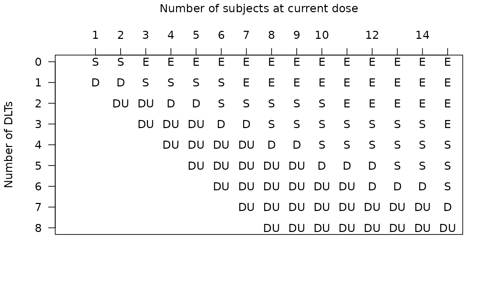

Plot a table of dose escalation vs de-escalation vs stop decisions
Source:R/dose_escalation_table.R
dose_escalation_table.RdPlot a table of dose escalation vs de-escalation vs stop decisions
Usage
dose_escalation_table(
mod,
stop_at_n_in_dose_level,
dose = as.integer(2),
stop_label = "DU"
)Examples
mymod <- get_mtpi2(num_doses = 9, target = 0.4, alpha = 2, beta = 2,
epsilon1 = 0.15, epsilon2 = 0.03,
exclusion_certainty = 0.8)
dose_escalation_table(
mod = mymod,
stop_at_n_in_dose_level = 15
)
